CAE / FEM
Static Structural, Modal, Explicit Dynamics 해석 설정·결과 비교와 오류 추적
STRUCTURAL ANALYSIS · CAE · MECHANICAL DESIGN
ANSYS 기반 구조해석과 SolidWorks 기구설계를 중심으로 DCF 메커니즘의 FEM-AI 역설계, 충돌해석 재현, 3D 프린팅 Fixture의 제작·개선 경험을 쌓았습니다. 시뮬레이션 결과뿐 아니라 가정, 오차, 제작상의 한계를 함께 설명하는 엔지니어를 지향합니다.
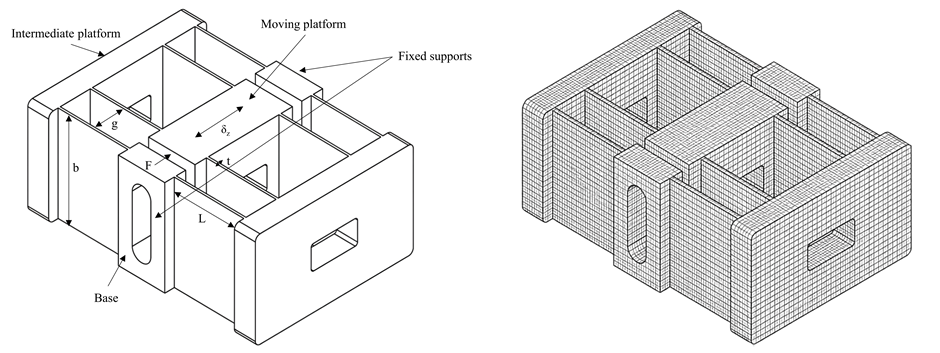
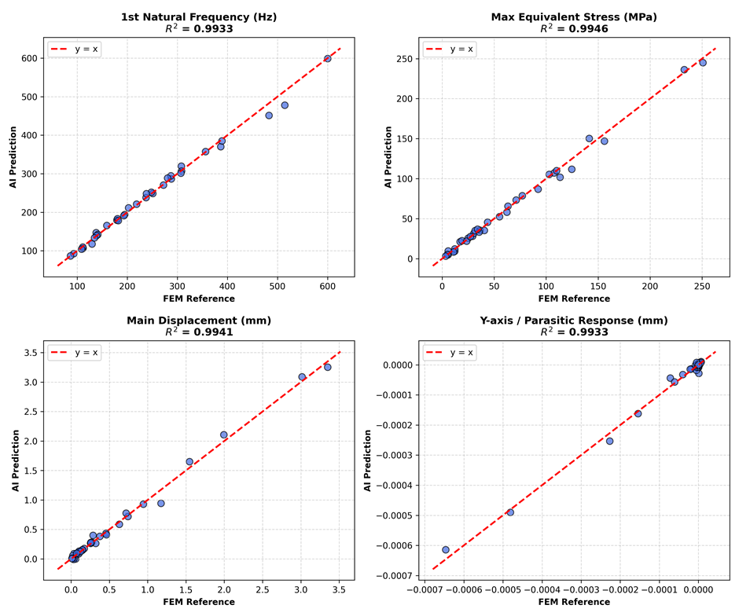
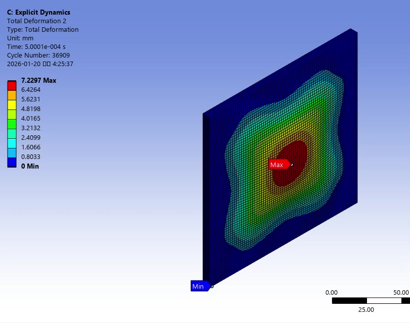
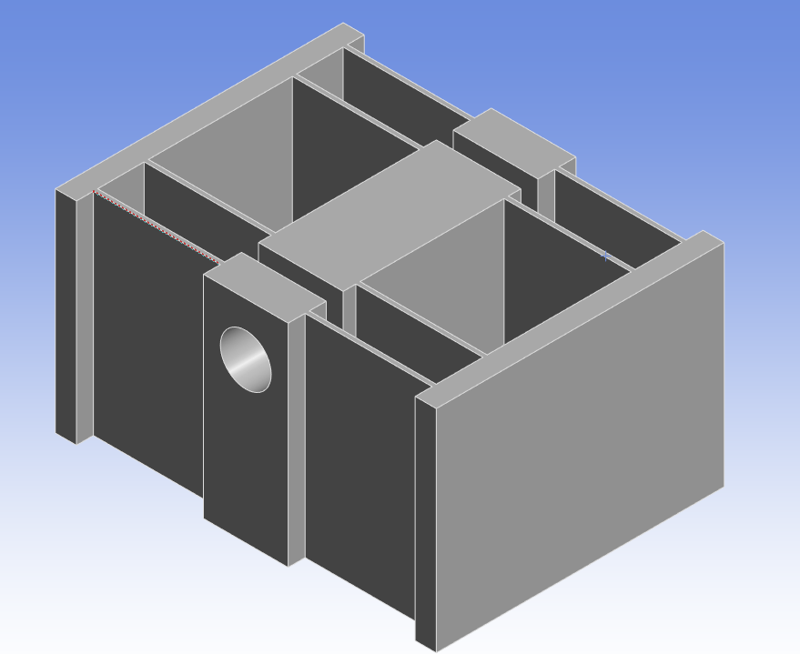
PROFILE · RESEARCH EXPERIENCE
학력과 연구 참여 이력을 중심으로, 구조해석·기구설계 직무 관련 경험을 간결하게 정리했습니다.
상기 Experience는 정규 기업 재직 경력이 아닌 대학 연구·산학협력 및 프로젝트 참여 이력입니다.
ABOUT / ENGINEERING PROFILE
로봇공학 전공 및 학부연구생 경험을 바탕으로 ANSYS 구조해석, SolidWorks 기구설계, FEM 데이터 기반 성능 예측을 수행했습니다. DCF 역설계 결과를 FEM으로 재검증했으며, 후속 Fixture 제작 과정에서는 출력 공차와 구조 파손·체결 문제를 관찰해 CAD 개선으로 연결했습니다.
충돌해석에서는 Mesh·Contact·Erosion을 점검한 뒤 Engineering Data의 직교이방성 물성·파손 설정 오류를 수정했습니다. 해석 결과의 한계와 실제 담당 범위를 구분하고, 기록과 재검증을 중시합니다.
Static Structural, Modal, Explicit Dynamics 해석 설정·결과 비교와 오류 추적
SolidWorks 부품·조립 모델링, Fixture 형상 설계, 3D 출력 및 체결성 검토
FEM 데이터 구축, 도구 지원을 활용한 MLP 대리모델, SLSQP 역설계와 FEM 재검증
논문·기술문서·연구 멘토링을 통한 결과 및 설계 변경 이력 정리
TWO FLAGSHIP CASES
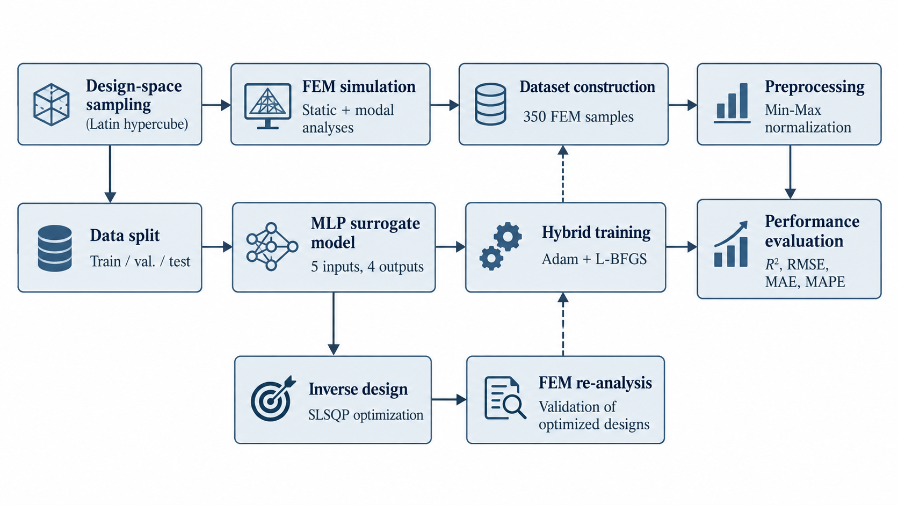
350개 FEM 데이터 기반 대리모델·역설계·FEM 재검증과, 후속 DCF 시제품 Fixture의 두 차례 출력·개선 이력을 한 프로젝트로 연결했습니다.
FEM · PyTorch · SLSQP · Re-analysis →다층 방탄판에서 헬멧 해석으로 연구를 전개하고 문헌 조건을 재현했습니다. 최종적으로 직교이방성 물성 및 파손 설정 문제를 수정했습니다.
Literature Reproduction · Explicit Dynamics · Comparison →FLAGSHIP 01 · RESEARCH CASE / FEM-AI
350개 FEM 데이터 기반 성능 예측·역설계와 후속 시제품 Fixture 설계 개선
반복적인 유한요소해석(FEM) 비용을 줄이기 위해 DCF(Double Compound Flexure)의 형상·하중 조건과 구조응답 간 관계를 학습하는 대리모델을 구축했습니다. 250개 전역 + 100개 국소 FEM 데이터 → 다중출력 MLP → 3개 Seed 반복 평가 → SLSQP 역설계 → 5개 FEM 재해석으로 검증했습니다. 이후 실제 거동 관찰을 위한 전용 Fixture CAD와 PLA 출력·개선으로 연구를 확장했습니다. Fixture 제작은 논문의 실험 검증과 별도 단계입니다.
CAE-AI 선행연구 조사와 중앙 원형 홀 평판 파일럿을 통해 방법론을 검증한 뒤 DCF 문제로 확장했습니다.
힌지 형상 변수와 하중을 입력으로 정의하고 Static Structural / Modal Analysis 결과로 총 350개 FEM 데이터를 구축했습니다.
구조응답 4개를 예측하는 다중출력 MLP 모델을 AI 코딩 보조 도구를 활용해 구성·수정하고, 서로 다른 3개 Seed 평가로 성능 변동을 확인했습니다.
Sequential Least Squares Programming(SLSQP)을 적용해 목표 변위와 허용응력 조건에 맞는 형상을 찾고, 5개 사례를 FEM으로 재해석했습니다. 경계 조건에서 발생한 오차도 함께 보고했습니다.
논문 원고와 결과를 정리하고, 후속 DCF Fixture의 Ver.1·Ver.2 CAD 설계와 PLA 출력 결과를 비교하며 상부 파손·M4 체결 홀 문제를 추적했습니다.
중앙 원형 홀 평판의 ¼ 대칭 FEM 모델과 ANN 구조응답 예측 문제를 재현하며 CAE-AI 파이프라인을 먼저 익힌 뒤, 실제 정밀 메커니즘 문제로 난도를 확장했습니다.
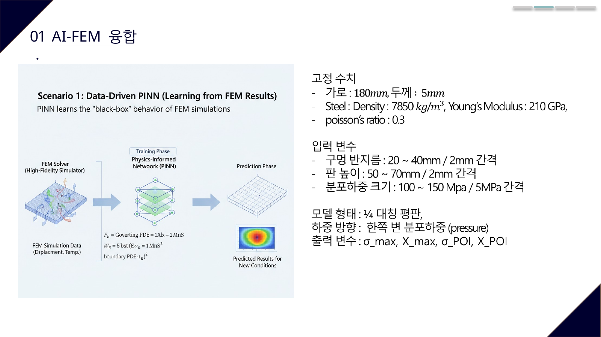
후속 실물 DCF 거동 관찰을 준비하며 직접 설계·출력·점검한 Fixture입니다. Ver.1에서는 위치 결정과 고정 개념을 먼저 검토했고, Ver.2에서는 파손과 체결 공차 문제를 반영해 형상을 보강했습니다.
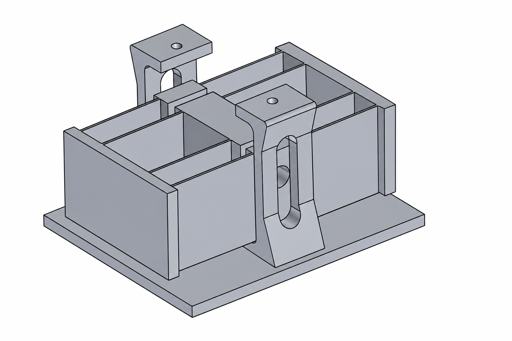
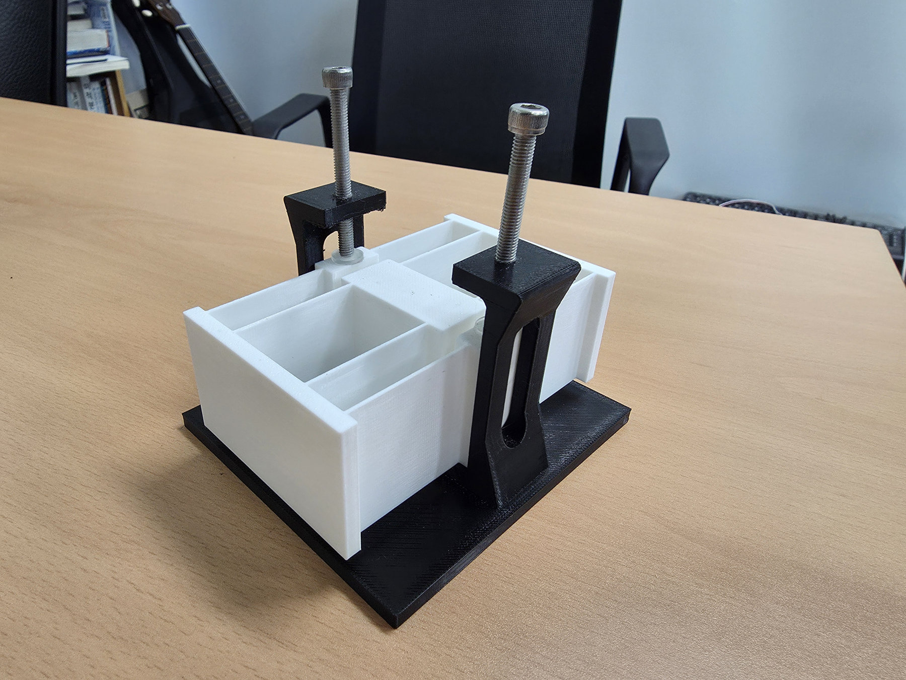
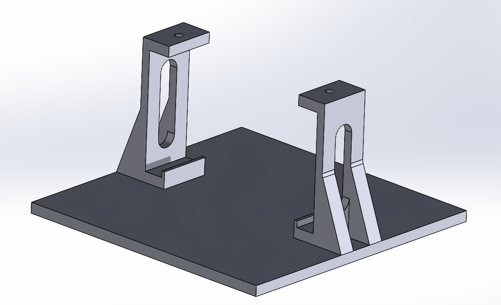
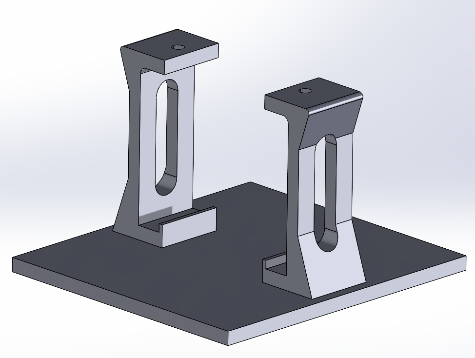
양측 Fixed Base를 안착시키는 Nesting 구조와 상부 걸림 턱, 하부 Rib, M4 체결부를 포함한 Ver.1 형상을 설계했습니다. 출력 후 Base의 삽입·분리는 가능했고 좌우 정렬도는 양호했습니다.
Base plate 9 mm · Clamp wall 5 mm · M4 홀 Ø4.0 mm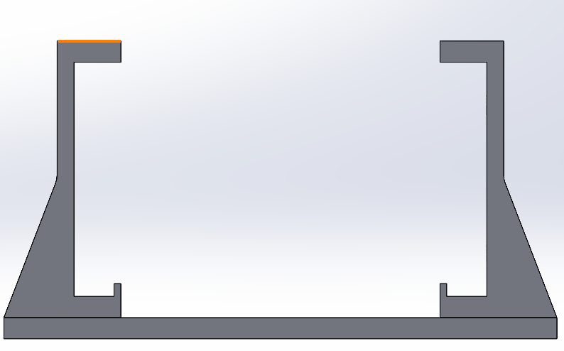
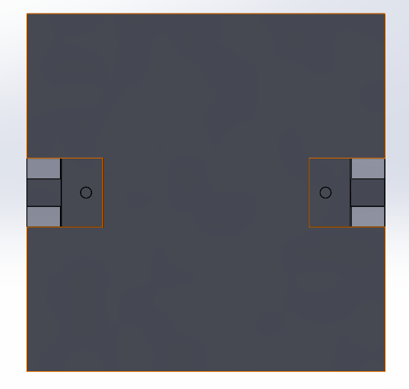
Support 제거 중 상부 목 부위의 파손 가능성을 확인했고, Ø4.0 mm 홀은 M4 볼트 삽입이 뻑뻑했습니다. 즉, 위치 결정은 가능했지만 실제 압착 고정과 출력 후 내구성은 별도로 점검해야 함을 확인했습니다.
위치 결정(Nesting)과 압착 고정(Clamping)은 별도 검토 필요상부 Fillet 및 경사 보강을 추가하고, 단면을 키워 파손 가능성을 낮추려 했습니다. 동시에 하부 Rib 일부를 정리하고 M4 홀을 Ø4.3 mm로 확대해 체결성 향상을 시도했습니다.
형상 보강 · 홀 공차 수정 · 출력성 고려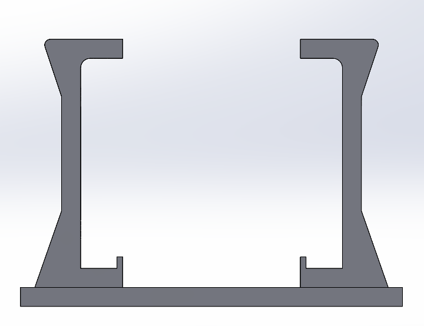
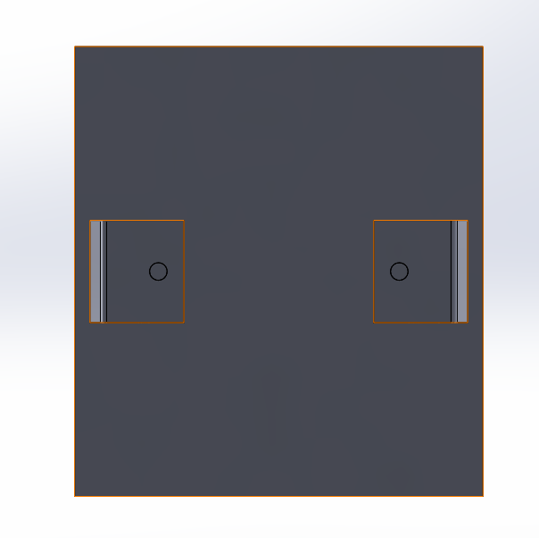
역설계 5건 중 4건은 AI–FEM 변위 오차 3.49% 이하였지만, 경계영역 ID-1은 9.29%로 증가했습니다. 후속 Fixture 역시 1·2차 출력에서 실제 체결·파손 문제를 확인했으며, 이를 ‘실험 검증 완료’로 포장하지 않고 설계 개선 단계로 명확히 구분했습니다.
FLAGSHIP 02 · ENGINEERING CASE / EXPLICIT DYNAMICS
다층 방탄판 → 단일 소재 헬멧 → 선행연구 형상·조건 재현 → 수치 오류 추적과 Engineering Data 수정
방탄판 충돌해석 재현 과정의 대표 시뮬레이션 영상입니다. 이 연구는 처음 다층 방탄판을 검토했고, 이후 헬멧 해석 및 Erosion 기능 학습을 거쳐 선행연구 조건을 재현했습니다. 이 영상은 실물 탄도시험을 의미하지 않습니다.
단순히 해석 결과를 얻는 것이 아니라, 선행연구를 기준으로 모델을 재현하고 결과 차이의 원인을 추적해 해석 조건을 보정했습니다.
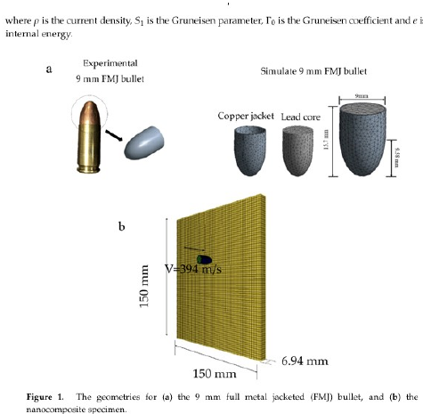
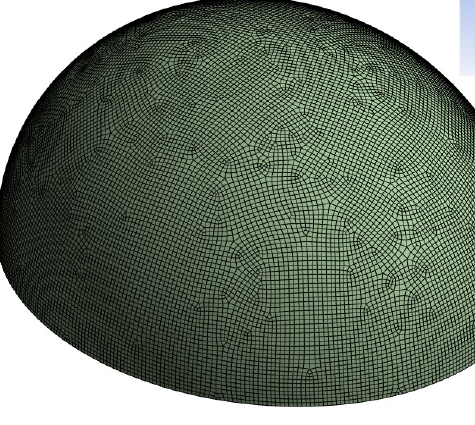
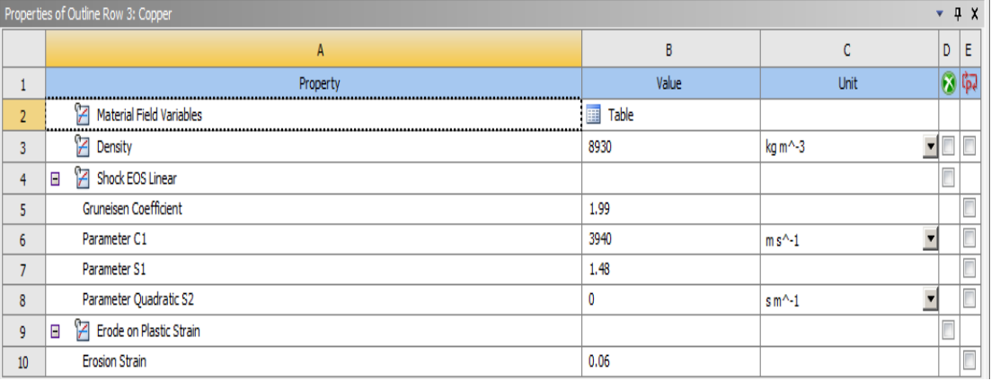
재현 과정에서 Mesh 크기 완화, 불필요한 Contact 정리, Erosion 및 time-step 조건을 차례로 검토했지만 문제가 지속됐습니다. 최종적으로 Engineering Data의 직교이방성 방향별 탄성계수·전단계수 및 소성변형률 파손/Erosion 설정 오류를 확인·수정한 뒤 해석 문제를 해결했습니다. 각 변경 항목의 개별 기여도나 재료 실측 물성의 타당성은 별도 검증하지 않았습니다.
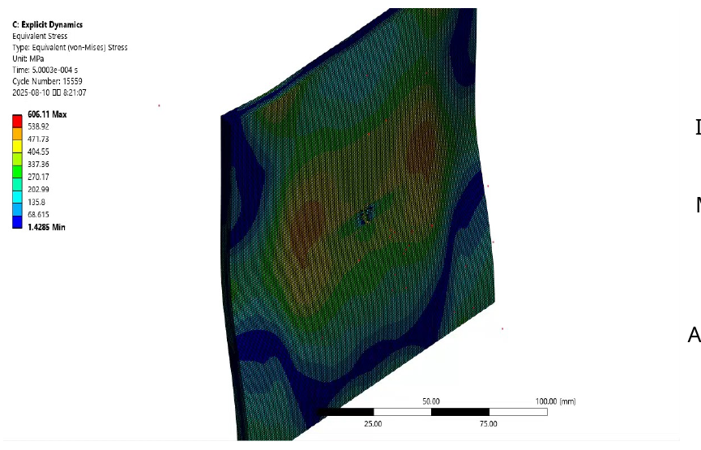
재현 모델의 수치 결과를 선행연구에 보고된 실험·해석 결과와 비교했습니다. 이 비교는 문헌 재현 검토로서, 제가 직접 실물 탄도시험을 수행하거나 재료 물성을 실험적으로 검증했다는 의미는 아닙니다.
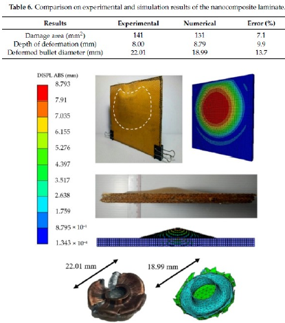
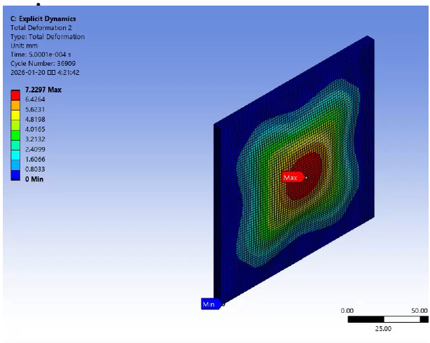
방탄 해석은 초기에 3층 방탄판을 모사한 뒤 단일 소재 헬멧 해석으로 방향을 전환했고, 이후 논문 재현 모델을 별도로 진행했습니다. 헬멧 단계와 문헌 재현 단계는 서로 다른 해석 모델이며, 후자의 MWCNTs 물성 설정을 초기 헬멧 모델에 사용했다고 주장하지 않습니다.
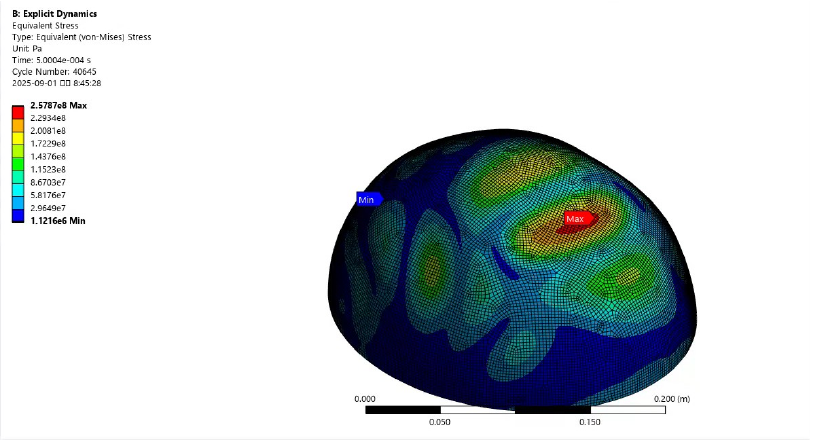
스터디 창설자가 아닌 기존 활동의 팀장 역할 승계자로서 ANSYS 학습 및 결과 보고서 작성·제출을 이어갔습니다.
WHAT I LEARNEDCAE에서 중요한 것은 Solver를 실행하는 것이 아니라, 결과를 신뢰할 수 있도록 모델링 가정과 수치조건을 설명할 수 있는 것입니다.
RESEARCH & ENGINEERING EXPERIENCE
영남대학교–㈜에듀원큐 산학과제에서 공장 통신 불안정에 AP 수신기 추가 설치로 대응하고, 마커 설치 기둥·환경을 확보했습니다. ArUco 마커 위치 설치·재배치 및 사업계획서·기술문서 정리에 참여했습니다. 전체 자율주행 AI 개발 성과로 표기하지 않습니다.
별도 연구실에서 오픈소스 로봇팔 CAD 모델을 SolidWorks로 활용해 부품을 3D 프린팅하고 조립했습니다. 자체 신규 로봇팔 전체 설계나 전체 휴머노이드 SW 개발을 주장하지 않습니다.
기존 팀의 팀장 역할을 이어받아 ANSYS 기반 해석 학습을 지속하고, 문제 풀이와 보고서를 정리·제출했습니다. 스터디 창설자가 아닙니다.
2025.07–11 연구 경험이 적은 학생들과 거북목 방지 모니터암 및 소리 기반 보안 주제를 단계적으로 진행했습니다. 자세 교정 디스플레이 시스템 아이디어는 특허 출원으로 연결했습니다.
OTHER ENGINEERING WORKS
팬·틸트 터렛, AprilTag 접근 제어, R&E 멘토링을 통해 영상 인식·제어와 제작 협업 경험을 확보했습니다. 담당 범위가 다른 프로젝트들은 독립적으로 구분했습니다.
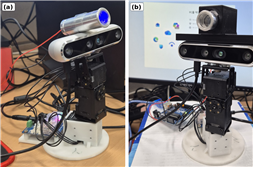
RealSense D455와 DYNAMIXEL로 영상 기반 소형 표적 추적 시스템을 구현하고 PD 제어 튜닝과 성능 평가를 수행했습니다. 국내 학술지 2026.09.16 게재승인.
Journal paper · Accepted 2026.09.16View case →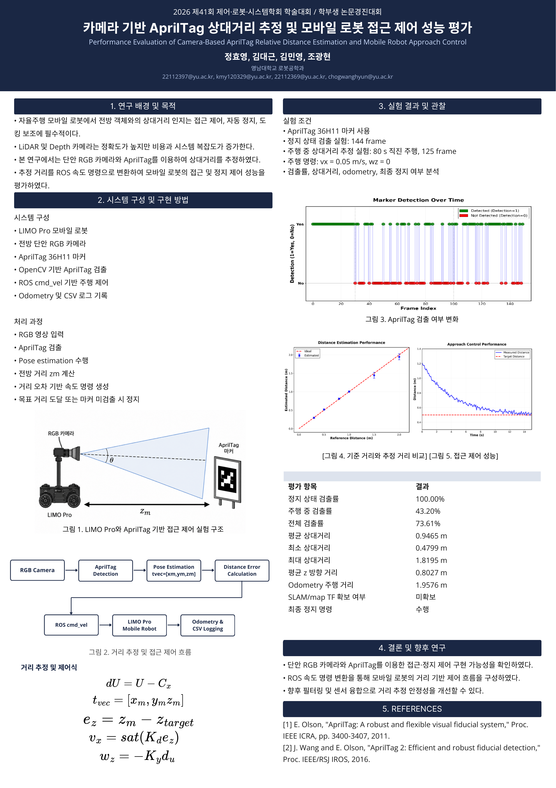
카메라 기반 AprilTag 상대거리 추정 및 모바일 로봇 접근 제어 실험에 공동저자로 참여하고 ICROS 2026 학술대회에서 발표했습니다.
View case →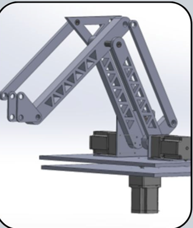
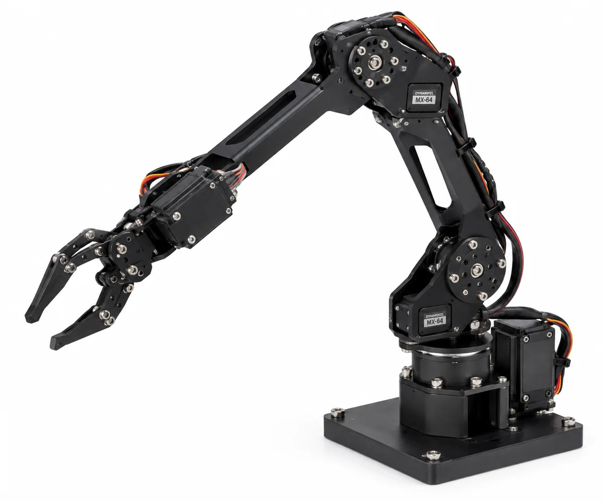
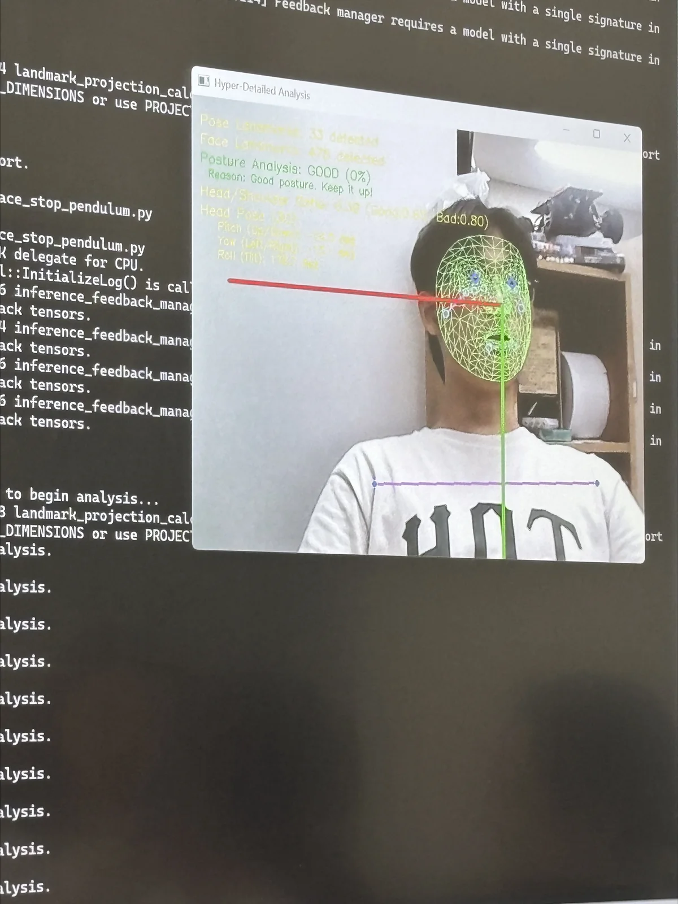
로봇팔 기구 설계, 실제 제어 실험, 얼굴 추적을 단계적으로 검증하고 자세 교정 아이디어를 특허 출원으로 확장.
Patent Application · 10-2025-0134168View case →RESEARCH OUTPUTS
제1저자 · Mechanics Based Design of Structures and Machines · 심사 중(Out for Review). 350개 FEM 데이터와 역설계 5건의 FEM 재해석 결과를 보고했습니다. 게재 확정이 아닙니다.
Submitted / Under Review · Publication not confirmed제1저자 · 한국산학기술학회논문지 · 2026.09.16 2차 종합심사 ‘게재가’ 판정. 최종논문 접수 2026.10.01. 권호 게재(Published)는 별도 확인이 필요합니다.
Submission ID kaisA-20261145 · Accepted, not yet confirmed published공동저자 · 2026.07.01 학술대회 발표(논문번호 P00512, WP-2). 제1저자 논문으로 계산하지 않습니다.
Conference poster PDF →본인 출원인·발명자 · 경산과학고 R&E 관련 연구성과. 출원 상태이며 등록 특허라고 표기하지 않습니다.
Application No. 10-2025-0134168 · Filed (not registered)AWARDS · TRAINING
구조해석과 산업 분야 교육을 우선 배치하고, 세미나 및 실무 확장 교육을 함께 정리했습니다. 과정별 실제 참석·이수 여부는 증빙 확인 후 확정해야 합니다.
영남대학교 공학교육혁신센터 · SAFE-ONEQ 연계 공장 관제 시스템 프로젝트. 담당: 현장 문제 해결·마커 배치·문서화
영남대학교 교육개발센터 · 팀원
구조해석·기구설계 및 미래 산업 직무 관련 교육
세미나, 아이디어 기획 및 IP 교육
TOOLS / TECH STACK
사용해 본 도구와 프로젝트에서 검증된 작업 범위만 기재했습니다. ROS와 미수행 해석 모듈은 핵심 역량 목록에서 제외했습니다.
ENGINEERING APPROACH
무엇이 실제 성능 병목인지 수치와 현상으로 분리
설계 변수·경계조건·센서/제어 구조를 명확히 정의
FEM 기준값, 선행연구 결과, 제작 관찰값을 성격에 맞게 비교
오차 원인을 기준으로 형상·파라미터·모델을 반복 개선
CONTACT
Mechanical R&D · CAE · FEM-AI 관련 연구 및 엔지니어링 기회에 열려 있습니다.